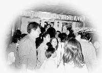
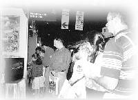

| Panorama d'événements |
 En novembre, le centre de Buenos Aires a reçu gratuitement une belle place à l'exposition qui prônait les styles de vie diététiques. Les amis pratiquants ont joyeusement saisi cette opportunité pour partager les enseignements de Maître avec les nombreux visiteurs.
|  | Les visiteurs contemplant des dessins de Maître, reconnaissaient que c'était la première fois qu'ils avaient ressentis une telle attirance pour un enseignant spirituel. Après l'événement, le centre a reçu de nombreuses requêtes pour apprendre notre Méthode de méditation. |